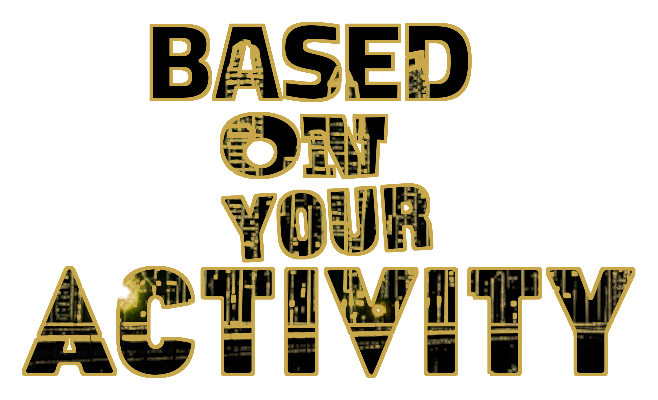
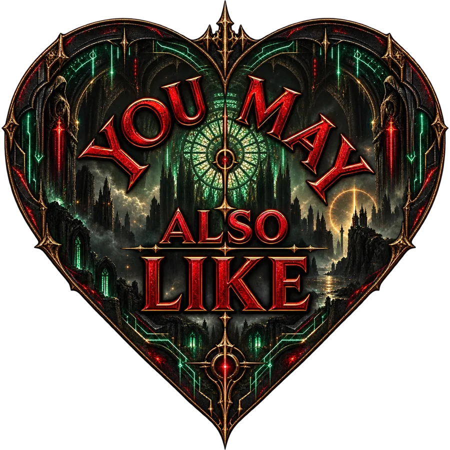
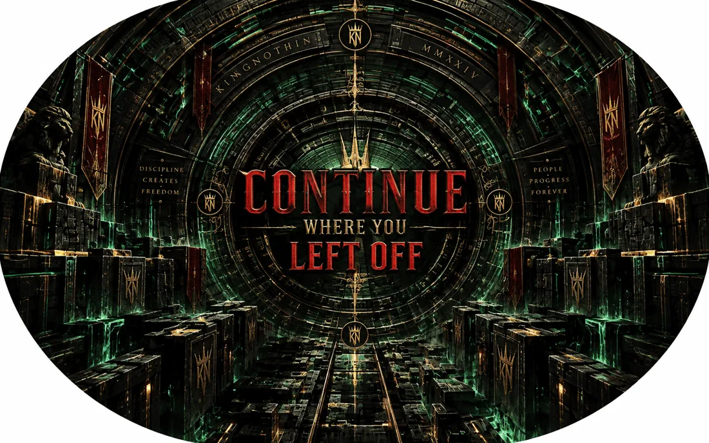

SPACE
Room to pause.
THE REVOLUTION HAS NO THRONE.
THE MISSION:
We are entering an age that will see technology be involved in every decision we make. It will know everything about us, it will have the ability to predict our next need and desire and it will ultimately shape most of the decisions we make. Never before in human history have we given a system this amount of influence. over us. This promises a future with exceptional opportunity and potential for amazing advancement. It also promises a future where our understanding of this system will be necessary to remain the authors of our own decisions. To avoid total reliance on the system and sustain our autonomy, our agency and our ability to choose deliberately.
We believe complex ideas about artificial intelligence, privacy, algorithms, and digital power shouldn't be understood only by experts. KINGNOTHIN breaks down these systems, follows the evidence, and explains what's happening, why it matters, and how it affects your daily choices.
TO CREATE AGENCY
We make the invisible visible: how your data becomes value, your attention becomes currency, and algorithms shape what you see. Not to create fear, but to illuminate the forces influencing your life so you can question, judge, and decide what to trust.
TO CREATE UNDERSTANDING.
We give you practical tools, independent investigation, and accessible education to protect your privacy, strengthen your digital independence, and preserve your attention. Our goal isn't to reject technology, but to ensure that as machines become more capable, you remain in control of your choices.
TO CREATE AUTONOMY
As artificial intelligence becomes woven into everyday life, technical knowledge alone will not be enough. We will need discernment—the ability to judge what we see, recognize manipulation, question what we are told and distinguish useful assistance from surrendered judgment.
We believe technology can expand human capability, unlock knowledge and create extraordinary possibilities.
Progress should strengthen the human being—not quietly replace human agency.
Our purpose at KINGNOTHIN is to transform people from passive observer of the Tech Age to deliberate participant
The technological age is being built now.
We believe the people living inside it deserve a say in what it becomes.
No kings.
No gatekeepers.
No throne required.
KINGNOTHIN.
THE REVOLUTION HAS NO THRONE.
Agency begins with clarity. Before you can shape the technological age, you need to see what is already shaping you — not with malice, but with mathematical precision, and at a scale no single person designed. The forces extracting value from your attention and behavior are not hidden by conspiracy. They are hidden by the very convenience they promise. Let us look at what is usually invisible.
RELENTLESS. INVASIVE. PREDATORY.
The Extraction Economy is always at work.
It gathers the actions of an everyday life; what you search, what you click, where you go, what you spend money on, who you converse with, what attracts your attention, and what holds your attention.
Those data points are then assembled into something far more valuable than a record of what you have already done. They become a predictive model of what, statistically, you will do next.
The exchange is presented as convenience.
The value travels predominantly in one direction.
SIGNAL→PROFILE→PREDICTION→DECISION→RETAINED VALUE
At KINGNOTHIN, privacy is our foundation. The right to a quiet personal space, where independent, unique, and deliberate thought can be born.
Before every action, there is a quiet moment when something begins to take shape inside your attention. A thought. Privacy gives that thought a space to sit, inspect, question, review, and conclude, ensuring that the thought becomes fully realized. Take that space away, and that thought becomes undernourished, underdeveloped, and not truly your own.
Scroll slowly
ASSOCIATION SIGNAL
01 / 09
Based on your activity



Because you watched
Recommended for you
Selected for you
Predicted for you
Trending in your area. Stage 1 of 9.
A MOMENT OUTSIDE THE MODEL
Your attention is still yours.
Notice. Question. Choose.
Inside that space, you can pause, question what you are shown, choose where your attention goes, and decide which ideas deserve a place in your mind.
SPACE
Room to pause.
ATTENTION
The power to choose what deserves your focus.
CLARITY
The ability to see what is shaping you.
CHOICE
The freedom to reach your own conclusion.
INDEPENDENT THOUGHT
Your mind, given room to lead.
A sovereign mind needs room to form its own conclusions.
KINGNOTHIN begins with privacy because every clear, deliberate, independent thought needs somewhere to take shape.
PRIVACY IS THE FOUNDATION.